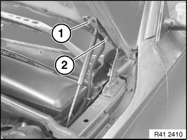
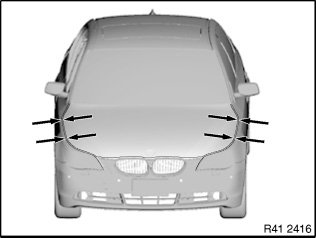
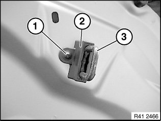
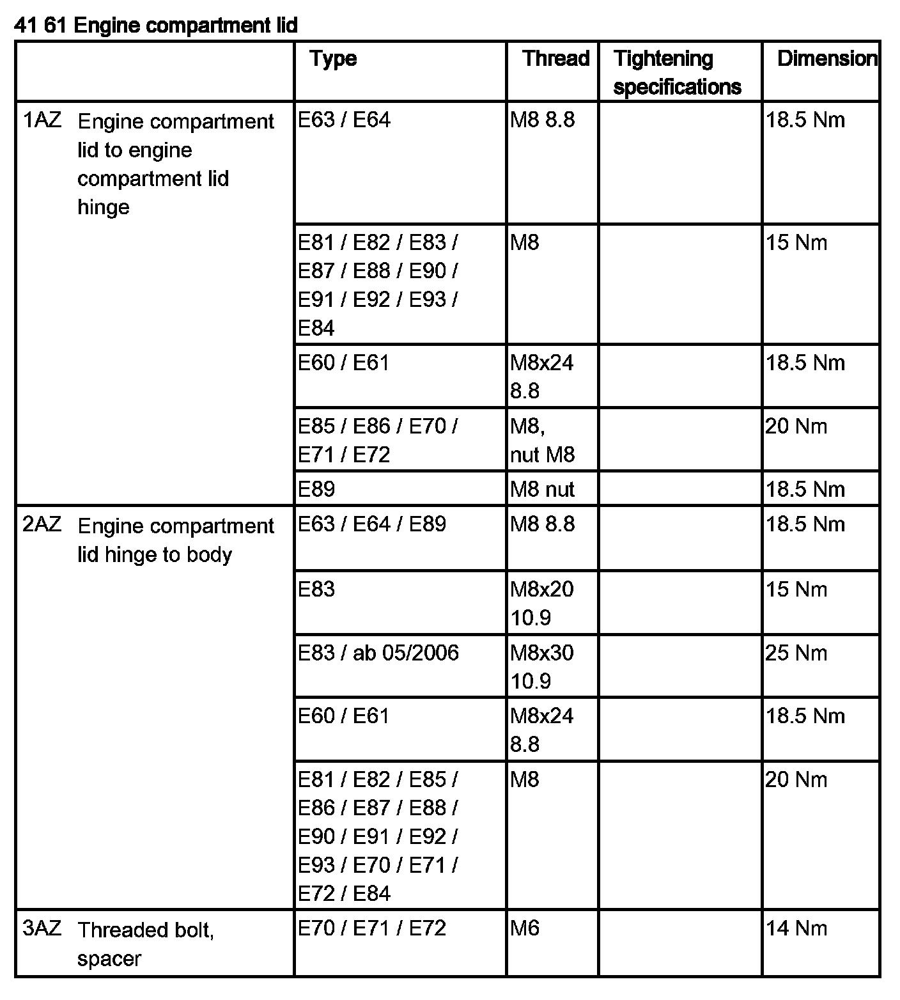

41 61 014 Adjusting Engine Bonnet/Hood
41 61 014 Adjusting engine bonnet/hood

Read contents of Body, General.
The specified gap dimensions serve as the basis for adjustment tasks.
Make unpainted surfaces visible by also moving the hinges. Touch these up in the appropriate colour.
NOTE: Carry over schematic representation to the relevant vehicle type.

Loosen screws (1) and (2) on left and right hinges.
Hood lid must be able to be moved.
NOTE: If the adjustment range is not sufficient, release retaining screws of engine hood hinge on body and move hinge.
Locks and retaining hook must snap correctly into place.
Adjust engine hood.

NOTE: Vertical adjustment of engine hood to side panel by means of stop pads.

NOTE:
- Height adjustment of bonnet to front wall:
- Release screw (1) and remove cover (2).
- Height adjustment by turning at closing hooks (3).

Tighten down all screw connections again.
Tightening torque 41 61 1AZ.
IMPORTANT: Check function of retaining hook.
